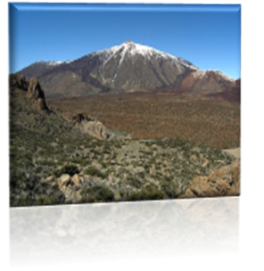
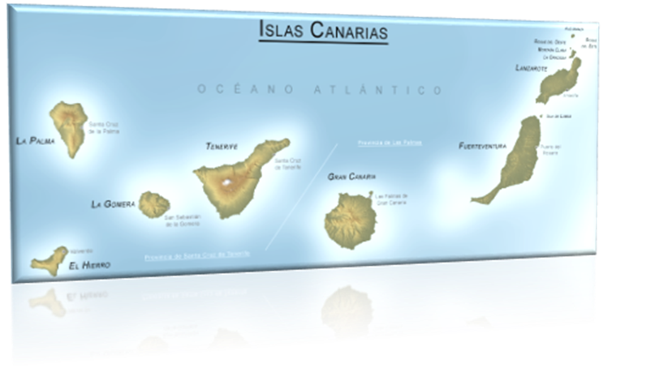
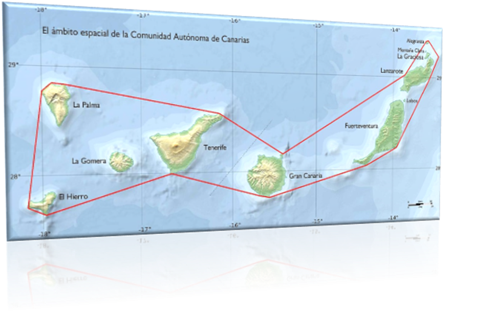
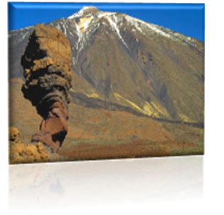

CANARIAS
Canarias es un archipiélago situado en el océano Atlántico que conforma una comunidad autónoma española en el noroeste de África, con estatus de nacionalidad histórica. Es, además, una de las regiones ultraperiféricas de la Unión Europea.
Canarias abarca ocho islas, cinco islotes, ocho roques y el mar. Políticamente el archipiélago se compone de siete islas con administración propia y una isla —La Graciosa— que está en trámites de ser gestionada en forma de pedanía. Las siete islas con administración propia son, por un lado, El Hierro, La Gomera, La Palma y Tenerife, que constituyen la provincia de Santa Cruz de Tenerife, y, por otro lado, Fuerteventura, Gran Canaria y Lanzarote, que constituyen la provincia de Las Palmas. A estas siete islas se le suman, por un lado, los islotes deshabitados de Montaña Clara, Alegranza, Roque del Este y Roque del Oeste, que, junto con la isla de La Graciosa, forman el archipiélago Chinijo, y, por otro lado, el islote de Lobos, todos estos pertenecientes a la provincia de Las Palmas. Además, a las ocho islas y cinco islotes se añaden una serie de roques adyacentes: los de Salmor, Fasnia, Bonanza, Garachico y Anaga situados en la provincia de Santa Cruz de Tenerife y los de Gando y el Farallón de Sardina situados en Gran Canaria. Por último, esta comunidad autónoma se completa con las aguas canarias, que son un especial ámbito marítimo de la comunidad autónoma y están integradas dentro del contorno perimetral que surge de la unión de los puntos extremos más salientes de las islas e islotes, siendo la única comunidad autónoma de España que incluye al mar como parte de su superficie.
El archipiélago está situado en el noroeste de África, cerca de las costas del sur de Marruecos y del norte del Sáhara Occidental, entre las coordenadas 27º 37' y 29º 25' de latitud norte y 13º 20' y 18º 10' de longitud oeste. La isla de Fuerteventura dista unos 95 km de la costa del África continental. La distancia a la masa continental europea es de unos 940 km —del islote de Alegranza a la punta de Sagres (Portugal)—. Por su situación geográfica, el archipiélago es la región más austral y occidental del Reino de España. Históricamente, ha sido considerada un puente entre tres continentes; África, América y Europa.
Las islas, de origen volcánico, se asientan sobre la placa africana y forman parte de la región natural de la Macaronesia, de la que son el archipiélago más extenso y poblado. Su clima es subtropical, aunque varía localmente según la altitud y la vertiente norte o sur. Esta variabilidad climática da lugar a una gran diversidad biológica que, junto a la riqueza paisajística y geológica, justifica la existencia en Canarias de cuatro parques nacionales y que todas las islas tengan reservas de la biosfera de la Unesco, y otras tengan zonas declaradas Patrimonio de la Humanidad. Estos atractivos naturales, el buen clima y las playas hacen de las islas un importante destino turístico, siendo visitadas en el año 2019 por más de 13 millones de personas. De hecho, es la primera potencia turística europea (y por tanto española) con 94 millones de pernoctaciones al año.
Canarias actualmente posee una población de 2 237 309 habitantes4 y una densidad de 283,08 hab./km²,4 siendo la octava autonomía en población. La población del archipiélago está concentrada mayoritariamente en las dos islas capitalinas, alrededor del 43 % en la isla de Tenerife y el 40 % en la isla de Gran Canaria. La superficie total del archipiélago es de, aproximadamente, 36 567 km², y está compuesta por la superficie terrestre, de 7447 km²,2021 y por la superficie marítima de las aguas canarias, de 29 120 km². Canarias utiliza durante el invierno boreal la hora de Greenwich (UTC±0) y durante el verano boreal una más (UTC+1), con una hora de diferencia respecto al resto de España.
Tal y como establece el Estatuto de Autonomía, la capitalidad de la comunidad autónoma es compartida entre las ciudades de Santa Cruz de Tenerife y Las Palmas de Gran Canaria; la sede del presidente del Gobierno autonómico alterna entre ambas por períodos legislativos, siendo la sede del vicepresidente distinta a la del presidente. El Parlamento está en Santa Cruz de Tenerife, mientras que la sede de la Delegación del Gobierno se ubica en Las Palmas de Gran Canaria, existiendo además una Subdelegación del Gobierno en cada una de las dos ciudades. Asimismo, hay un equilibrio entre las dos capitales en cuanto a sedes de consejerías e instituciones públicas aunque el resto de la administración autonómica se encuentra en su práctica totalidad duplicada entre ambas ciudades. Por su parte, en la ciudad de San Cristóbal de La Laguna se encuentra la sede del Consejo Consultivo de Canarias, que es el supremo órgano consultivo.
Índice
1. Toponimia
2. Símbolos
2.1. Bandera
2.2. Escudo
2.3. Símbolos naturales
3.1. Relieve
3.2. Clima
3.3. Islas
3.3.1.El Hierro
3.3.2.La Palma
3.3.3.La Gomera
3.3.4.Tenerife
3.3.5.Gran Canaria
3.3.6.Fuerteventura
3.3.7.Lanzarote
3.3.8.La Graciosa
3.4. Aguas canarias
3.5. Flora
3.6. Fauna
3.7. Espacios naturales protegidos
3.7.1.Parques nacionales
3.7.2.Patrimonios de la Humanidad
4.1.1.Capitalidad
El primer documento escrito con una referencia directa a Canarias se debe a Plinio el Viejo, que cita el viaje del rey Juba II de Mauritania a las islas en el 40 a. C. y se refiere a ellas por primera vez como Islas Afortunadas (Fortunatae Insulae). En este documento también aparece por primera vez el término Canaria, utilizado para hacer referencia a la isla de Gran Canaria.
De acuerdo con Plinio, este nombre le fue dado a la isla en memoria de dos grandes mastines que los enviados de Juba capturaron allí y llevaron posteriormente a Mauritania (antigua región del noroccidente del Magreb, no confundir con la actual Mauritania), y que aparecen representados a ambos lados del actual escudo de Canarias.
Ya desde la Antigüedad se usó el topónimo en plural para referirse al conjunto del archipiélago. Así, en el siglo IV Arnobio de Sicca escribió acerca de las Canarias insulas.
Algunas teorías modernas relacionan el término Canarias con el etnónimo norteafricano canarii, grupo bereber que se ubicaba en la zona noroccidental africana. De hecho, el propio Plinio menciona en otro texto a los canarii, si bien de nuevo vuelve a relacionar este término con los perros.
El historiador José Juan Jiménez, del Museo de la Naturaleza y el Hombre de Tenerife, sostiene que: «Canarias debe su nombre a los cannis marinus, una especie de foca monje de gran tamaño que pobló las costas del Archipiélago hasta el siglo XV».
La bandera de Canarias es oficial de esta comunidad autónoma desde 1982 por la Ley Orgánica 10/1982 del 10 de agosto sobre Estatuto de Autonomía de Canarias. En este se establece, en el artículo 7, lo siguiente:
"La bandera de Canarias está formada por tres franjas iguales en sentido vertical, cuyos colores son a partir del asta, blanco, azul y amarillo".
Tradicionalmente se asume que los colores de la bandera derivan de los colores de las dos actuales banderas de las provincias marítimas de Canarias; la de Tenerife (blanco y azul) y la de Gran Canaria (azul y amarillo), siendo el orden de los colores según la disposición geográfica de ambas, es decir, el blanco a la izquierda, que se corresponde con el occidente y con Tenerife, el amarillo a la derecha que se identifica con el oriente y con Gran Canaria. El azul (que comparten ambas) se sitúa en el centro.
En el Boletín Oficial de Canarias núm. 237, del 2 de diciembre de 2005, se aprobó la actualización del Manual de Identidad Corporativa Gráfica del Gobierno de Canarias. En dicho manual se especifican, en el Capítulo I, las proporciones del ancho de la bandera y el tipo de amarillo y azul oficiales de los colores de esta. También se incluyen en este manual dos versiones de la bandera de Canarias como identidad de la Comunidad Autónoma: la versión sin escudo, que corresponde con la descripción dada en el Estatuto de Autonomía, y la versión que incluye el Escudo de Canarias en el centro de la bandera.
El escudo oficial de la Comunidad Autónoma de Canarias fue creado en 1982 gracias a la ley orgánica 10/1982 del 10 de agosto sobre el Estatuto de Autonomía de Canarias. En este se establece, en el artículo 7, lo siguiente:
Canarias tiene escudo propio, cuya descripción es la siguiente: en campo de azur trae siete islas de plata bien ordenadas, dos, dos, dos y una, esta última en punta. Como timbre una corona real cerrada, surmontada de una cinta de plata con el lema Océano de sable y como soportes dos canes en su color.
En el Manual de Identidad Corporativa Gráfica del Gobierno de Canarias se especifican las proporciones del escudo. Asimismo, en este manual se establece cuando debe de usarse el escudo, donde se dice exactamente:30
El uso del escudo de la Comunidad se ceñirá exclusivamente:
- A la representación de ésta en su conjunto, para aquellos casos de especial relevancia. Por ejemplo: Acto principal del Día de Canarias, distinciones de máximo rango, encuentros de Jefes de estado, etc).
- Al Boletín Oficial de Canarias (BOC) y al Cuerpo General de la Policía Canaria.
En 1991 el Gobierno de Canarias decidió que el pájaro canario (Serinus canaria) y la palmera canaria (Phoenix canariensis) fueran los símbolos naturales de las Islas Canarias.
Canarias es un archipiélago volcánico muy reciente geológicamente, con apenas 30 millones de años de antigüedad. Sus grandes edificios volcánicos se apoyan sobre grandes bloques de la corteza oceánica, y en la zona de contacto con la corteza continental africana. La disposición de las islas refleja la red de fallas presentes en la corteza oceánica.
La historia geológica de las islas es muy compleja. Encontramos varias fases de coladas de lavas que dan un típico relieve volcánico. Durante las grandes glaciaciones, las Canarias tuvieron un clima más árido que favoreció la erosión y la aparición de derrubios en las laderas y los barrancos.
Las costas son las más expuestas al ímpetu de la erosión, debido a la actividad marina. Hay muy pocas zonas de acumulación, lo que supone la existencia de muy pocas playas naturales. Predominan los grandes acantilados. Es destacable que Canarias es la región española con mayor longitud de costas: 1583 km.
Los barrancos son muy característicos de las Islas Canarias: se trata del cauce esporádico por donde se dirigen las aguas corrientes presentes en las islas. Su recorrido es corto, y generalmente tienen un perfil rectilíneo muy marcado. Su cauce está tapizado de derrubios arrastrados por las aguas.
Canarias afectada por el polvo en suspensión procedente del desierto del Sáhara, fenómeno conocido como calima o polvo en suspensión
El clima es subtropical oceánico, con temperaturas mitigadas todo el año por el mar y en verano por los vientos alisios. Nos encontramos con variaciones muy importantes en cuanto al régimen de precipitaciones. En algunas zonas de la isla de La Palma, por ejemplo, las precipitaciones anuales llegan a superar los 1200 mm. En las islas orientales las precipitaciones son más escasas que en las occidentales; así Fuerteventura y Lanzarote se caracterizan por un clima árido semidesértico. La escasez de lluvia ha llevado a la instalación de desaladoras para abastecer zonas urbanas, como en Las Palmas de Gran Canaria o Santa Cruz de Tenerife. De hecho, la primera planta desaladora de España se instaló en la isla de Lanzarote en 1964, y en la actualidad esta isla y Fuerteventura se abastecen en su totalidad de agua de mar desalada. La porosidad del terreno dada su naturaleza volcánica, dificulta el aprovechamiento del agua de la lluvia en presas y embalses, si bien estas tienen una cierta importancia en Gran Canaria y La Gomera. En las islas occidentales se lleva a cabo un aprovechamiento de los acuíferos subterráneos a través de las galerías, a excepción de la isla de El Hierro, donde son más importantes los pozos y aljibes. Una característica de algunos lugares de las islas es la presencia de montañas cerca de la costa que provocan que las masas de aire se condensen, dando lugar al fenómeno conocido como mar de nubes, y por tanto, el beneficio de la vegetación de la zona debido a la humedad. Sin embargo, debido a los microclimas existentes en una misma isla, podemos encontrar zonas donde aparecen bosques húmedos y otras zonas donde la aridez es la característica principal.
Los vientos suelen soplar con mayor frecuencia del nororiente, vientos que si bien no suelen dejar precipitaciones, si reportan humedad a las zonas orientadas hacia ese lugar, formándose el ya citado mar de nubes en zonas medias y altas. Los vientos del levante, siroco, suelen ir acompañado de calima, es decir, polvo en suspensión procedente del desierto del Sáhara, alcanzando a veces una gran densidad.
Las islas carecen de ríos aunque los barrancos son numerosos y las aguas discurren rápidamente desde las zonas altas hasta las costas. A pesar de ello existen algunas corrientes continuas de agua en La Palma, La Gomera, Tenerife y Gran Canaria.
Ordenadas de occidente a oriente, las islas Canarias son El Hierro, La Palma, La Gomera, Tenerife, Gran Canaria, Fuerteventura, Lanzarote y La Graciosa, teniendo administración propia las siete primeras y estando la última adscrita a la isla de Lanzarote administrativamente. Además, al norte de Lanzarote se encuentran los islotes de Montaña Clara, Alegranza, Roque del Este y Roque del Oeste, perteneciendo estos, junto con la isla de La Graciosa, al archipiélago Chinijo, y al noreste de Fuerteventura se halla el islote de Lobos. También existen en Canarias una serie de pequeños roques adyacentes: los roques de Anaga, Garachico y Fasnia en Tenerife, y los de Salmor y Bonanza en El Hierro. La suma total de la superficie de todas las islas e islotes es de 7446,95 km², siendo esta el 20,37 % de la superficie total de la comunidad autónoma, ya que en esta se incluye el especial ámbito marítimo de las aguas canarias.
Las antípodas de Canarias se encuentran en el océano Pacífico, entre Nueva Zelanda, Nueva Caledonia, Australia y el océano.
El Hierro
El Hierro es la isla más occidental del archipiélago y, entre las islas con administración propia, es la más pequeña, con 268,71 km², y la menos poblada, con 11 147 habitantes. Su capital es Valverde (4995 habitantes). Antiguamente toda la isla estaba conformada por un único municipio, pero debido a la Ley de Cabildos de 1912 se creó el municipio de Frontera y ya en pleno siglo XXI el de El Pinar por una disputa entre sus vecinos y los de Frontera en torno a la Virgen de los Reyes (Patrona de El Hierro). Toda la isla fue declarada Reserva de la Biosfera en 2000. Es conocida por sus ejemplares de sabina inclinados por el viento; por el antiguo Garoé o Árbol Santo; por sus lagartos gigantes, y porque en el pasado el meridiano 0º tomaba como referencia la Punta de Orchilla, situada en el occidente de la isla. Desde el siglo XVIII se viajaba a esta isla para tomar las aguas curativas del Pozo de Sabinosa, o Pozo de la Salud. Aquí nació la cantadora y tamborilera Valentina la de Sabinosa, figura del folclore canario. La isla también destaca por sus fondos marinos y sus centros de buceo. Entre octubre de 2011 y marzo de 2012 tuvo lugar una erupción submarina. El cono volcánico submarino se encuentra a 88 metros de profundidad, cerca de la localidad de La Restinga, en el Mar de las Calmas. La erupción de El Hierro de 2011 fue ampliamente estudiada por los métodos científicos modernos y su duración fue la más larga de la historia de Canarias después de la de Timanfaya. Con la construcción de la central hidroeólica de Gorona del Viento, El Hierro se convirtió en la primera isla del planeta en autoabastecerse completamente de energías renovables en 2014,3940 demostrando además que este tipo de energías son rentables económicamente.
Algunos atractivos de la isla son los Roques de Salmor, el árbol Garoé, el Roque de La Bonanza, los petroglifos de El Julan y la Bajada de la Virgen de los Reyes, que se celebra cada cuatro años. En Las Puntas se encuentra el hotel más pequeño del mundo con sólo dos habitaciones.
La Palma, con 83 458 habitantes, sus 708,32 km² son en su totalidad Reserva de la Biosfera. Ha tenido actividad volcánica reciente, apreciable en el volcán Teneguía, que entró en erupción por última vez en 1971.43 En septiembre de 2021 se inició otra erupción volcánica, en la misma alineación de las dos anteriores (San Juan y Teneguía). Además, es la segunda isla más alta de Canarias, con el Roque de los Muchachos (2426 m) como punto más elevado. Este pico se halla en los límites del parque nacional de la Caldera de Taburiente en el municipio de El Paso, y en sus inmediaciones está emplazado el Observatorio del Roque de los Muchachos del Instituto de Astrofísica de Canarias: en él se encuentra el Gran Telescopio Canarias, que con su espejo principal de 10,40 m de diámetro es el telescopio óptico más grande del planeta. Por su exuberante vegetación, La Palma es conocida también como la "Isla Bonita". Su capital es Santa Cruz de La Palma (13 842 en la capital, 17 084 habitantes en el municipio), ciudad donde tiene su sede el Diputado del Común del Parlamento de Canarias (cargo equivalente al Defensor del Pueblo, pero a nivel autonómico), y el municipio más poblado es Los Llanos de Aridane (20 766 habitantes).
La Gomera tiene una superficie de 369,76 km² y, entre las islas con administración propia, es la segunda isla menos poblada, después de El Hierro, con 21 678 habitantes. La capital insular es San Sebastián de La Gomera (8965 habitantes). En La Gomera se encuentra el parque nacional de Garajonay, declarado por la Unesco en 1986 Patrimonio de la Humanidad, que representa un buen ejemplo de bosque de laurisilva. Por su parte el silbo gomero (lenguaje silbado practicado por algunos habitantes de la isla), también es Patrimonio de la Humanidad desde 2009. Es la única isla de Canarias en la que no se ha registrado ninguna erupción volcánica en época histórica ni cuenta con vulcanismo reciente. Sólo existe un cono volcánico reconocible, el resto de los volcanes han sido erosionados dejando numerosos roques por toda la geografía insular. La isla fue el último territorio que tocó Cristóbal Colón antes de llegar a América en su viaje de descubrimiento de 1492: por ello es también conocida como la "Isla Colombina". Algunos atractivos de la isla son La Torre del Conde, la Ermita de Guadalupe (Patrona de La Gomera) en Puntallana, El Roque de Agando, el Roque Blanco, la Fortaleza de Chipude y los acantilados de Los Órganos. Para llegar a la isla hasta 1999 había que hacerlo en barco, pues no existía un aeropuerto por lo accidentado del terreno sin una sola llanura apta para ello. Sin embargo anteriormente existió un aeródromo privado en la zona de El Revolcadero, muy cerca del actual aeropuerto.
Tenerife es la isla más extensa de Canarias y la segunda de España, con una superficie de 2034,38 km². Además, es también la isla más extensa y poblada de la región de la Macaronesia.16 Con 928 604 habitantes y una densidad de población de 445 hab./km² es además la isla más poblada de Canarias y de España. Los municipios más poblados de la isla son Santa Cruz de Tenerife (209 194 habitantes) y San Cristóbal de La Laguna (155 549 habitantes), ambas ciudades están unidas físicamente. Estos dos municipios forman, junto con El Rosario y Tegueste el área metropolitana de Santa Cruz de Tenerife, que cuenta con unos 400 000 habitantes. Arona es el tercer municipio más poblado de la isla con (99 189 habitantes). La ciudad de Santa Cruz de Tenerife es sede del Parlamento de Canarias, de la Capitanía General de Canarias, del Cabildo de Tenerife y cuenta con una sede de la Universidad Europea de Canarias, la European School of Management Tenerife, con la sede en Canarias de la Universidad Internacional Menéndez Pelayo y también, con el Instituto Universitario de la Empresa de la Universidad de La Laguna y varias facultades de esta universidad. En la ciudad se encuentra la sede del Instituto Español de Oceanografía. Es además la ciudad más poblada de la isla, de la provincia y capital insular, provincial y de la Comunidad Autónoma de Canarias conjuntamente con Las Palmas de Gran Canaria. La ciudad de La Laguna es la segunda más poblada de la isla y tercera del archipiélago, está declarada Patrimonio de la Humanidad por la Unesco, y en ella se encuentra la sede de la Universidad de La Laguna y la Universidad Nacional de Educación a Distancia. Cuenta también con grandes instituciones culturales de Canarias como el Ateneo de La Laguna, el Instituto de Estudios Canarios y la Real Sociedad Económica de Amigos del País de Tenerife. La Laguna es la ciudad donde se concentra la mayor parte de los centros de investigación de la isla gracias a que cuenta con la Universidad de La Laguna. Entre ellos destacamos, por su relevancia internacional, el Instituto de Astrofísica de Canarias, Instituto Universitario de Enfermedades Tropicales y Salud Pública de Canarias, Instituto Universitario de Bio-Orgánica Antonio González y el CSIC-Instituto de Productos Naturales y Agrobiología. Por su parte, también en esta ciudad se encuentra la sede del Consejo Consultivo de Canarias, que es el supremo órgano consultivo de la Comunidad Autónoma de Canarias. Destacan también, por su importancia turística, otros cuatro municipios: La Orotava, Puerto de la Cruz en el norte, y Arona y Adeje en el sur. Hay que citar además la Villa Mariana de Candelaria, donde se encuentra la imagen de Virgen de Candelaria, Patrona del Archipiélago Canario. La patrona de la Diócesis Nivariense (que engloba la provincia de Santa Cruz de Tenerife) es la Virgen de los Remedios, que se venera en La Laguna. Gran parte de las empresas de Canarias se concentran en Tenerife. La isla es conocida, en virtud de su clima, como "la isla de la eterna primavera", y cuenta con diversas playas de arena fina oscura volcánica y diversos parques naturales. Prácticamente la mitad de la isla (48,6 %), se encuentra bajo las diferentes fórmulas de protección que atribuyen la Red Canaria de Espacios Naturales Protegidos. De los 146 espacios naturales recogidos por la citada red en el conjunto del archipiélago, un total de 43 se encuentran en Tenerife, siendo de este modo la isla que mayor número de espacios posee. Asimismo, atendiendo al porcentaje de territorio protegido con el que cada isla contribuye al total del archipiélago, hay que destacar que es Tenerife con un 37 % la isla que encabeza la tabla. Entre otros espacios naturales protegidos, alberga el parque nacional del Teide, también declarado Patrimonio de la Humanidad por la Unesco: es uno de los parques nacionales más visitados del mundo y en él se encuentra el volcán Teide, que con sus 3718 metros, representa el techo de España y el tercer volcán más grande del mundo desde su base. Además destacan también en la isla otros espacios naturales de gran valor ecológico, como el parque natural de la Corona Forestal, el cual es el mayor espacio natural protegido de las Islas Canarias, y los parques rurales de Anaga (en el oriente) y de Teno (en el occidente de la isla). El Macizo de Anaga es el lugar que cuenta con mayor cantidad de endemismos de Europa y que es Reserva de la Biosfera por la UNESCO desde 2015. Geológicamente es importante también destacar la Cueva del Viento, la cual es el tubo volcánico más grande de la Unión Europea y uno de los más grandes del mundo, de hecho es el quinto. En consecuencia, es un territorio de fuertes pendientes, en las que la erosión ha excavado valles de gran inclinación. En la vertiente norte, la más húmeda y fértil, se halla el valle de Icod, que constituye una de las principales áreas plataneras. Las vertientes meridionales son, por el contrario, semidesérticas. La isla es conocida internacionalmente por el Carnaval de Santa Cruz de Tenerife, considerado uno de los más importantes del mundo. Tenerife es la isla que cuenta con la mayor cantidad de turistas anuales de Canarias.747576 El municipio de Adeje en el sur de la isla, cuenta con la mayor concentración de hoteles 5 estrellas de Europa y además tiene el que es considerado el mejor hotel de lujo de España según World Travel Awards.
Gran Canaria es la segunda isla más poblada de Canarias y la más densamente poblada así como la más poblada de la provincia de Las Palmas con 855 521 habitantes. Es la tercera isla más extensa de Canarias y la cuarta de España. La ciudad de Las Palmas de Gran Canaria es la capital de la isla, sede de la Delegación del Gobierno, el Tribunal Superior de Justicia de Canarias y del Cabildo de Gran Canaria, y comparte la capitalidad de Canarias con Santa Cruz de Tenerife. Además, con 381 223 habitantes es la urbe más poblada del archipiélago, así como la novena de España. Otras localidades importantes de la isla son Telde, que con 102 164 habitantes es la segunda ciudad en población de la isla y la cuarta del archipiélago, Vecindario (en el suroriente), Arucas y Gáldar (en el norte). Gáldar y Telde eran las capitales prehispánicas de la isla. En Teror se encuentra la imagen de la Virgen del Pino, Patrona de la Diócesis de Canarias (que engloba la provincia de Las Palmas). La Universidad de Las Palmas de Gran Canaria tiene su principal campus en el barrio capitalino de Tafira, con un clima fresco y agradable. El Rectorado de la Universidad se sitúa en Vegueta, en pleno centro histórico. Santa María de Guía alberga la sede canaria de la Universidad Fernando Pessoa.81 Otros centros universitarios en la isla son la Universidad del Atlántico Medio (privada) en Tafira, la UNED, así como la Universidad a Distancia de Madrid y la Universidad Alfonso X el Sabio. Se encuentran además varios observatorios astronómicos como el Observatorio de Temisas o el Radar del Pico de Las Nieves. La Estación Espacial de Maspalomas tuvo un papel crucial en la llegada del hombre a la luna. En esta isla se encuentran algunas de las más conocidas empresas de Canarias, con algunos referentes a nivel nacional como Ron Arehucas, Grupo Kalise, Clipper, o Tirma. Otros productos típicos son el chorizo de Teror, los suspiros de Moya, el Ron Miel y el Bienmesabe. Siendo el turismo la principal actividad económica de la isla, los principales núcleos turísticos se encuentran en los municipios de San Bartolomé de Tirajana y Mogán, existiendo también una gran cantidad de hoteles en la capital insular y en menor medida en otras poblaciones. Son de especial relevancia el Oasis y las Dunas de Maspalomas, uno de los dos campos de dunas que han existido en la isla, las Dunas de Guanarteme se encuentran en la actualidad desaparecidas. Otros importantes atractivos turísticos son el Roque Nublo y los cascos históricos coloniales. El Real Club de Golf de Las Palmas es el más antiguo de España, mientras que el Jardín Canario es el más grande de España y uno de los mayores de Europa con 27 ha. La isla, con 1560,1 km², tiene una forma circular y muy montañosa. En su macizo central destacan el Roque Nublo (1813 m), el Pico de las Nieves (1949 m) y el Morro de la Agujereada (1956 m),87 este último, la mayor altura de la isla y de la provincia de Las Palmas. Cuenta con 33 espacios protegidos que corresponden con un 43 % de la superficie insular, de entre ellos destacan representaciones de pinar canario bien conservadas como el parque natural de Tamadaba (pinar húmedo), el parque natural de Pilancones (pinar seco) y el denominado "Paisaje Cultural del Risco Caído y los Espacios Sagrados de Montaña de Gran Canaria",88 Patrimonio de la Humanidad declarado por la UNESCO el 7 de julio de 2019.8990 Posee una extraordinaria riqueza arqueológica con importantes yacimientos como la Cueva Pintada, el Cenobio de Valerón y otros. El Museo Canario alberga una gran cantidad de material arqueológico y antropológico. Además, aproximadamente una tercera parte del territorio insular y una franja marina del suroccidente de la isla han sido catalogadas por la Unesco como Reserva de la Biosfera. Se han producido varios intentos de declarar un parque nacional en el centro de la isla, proyecto que aún sigue adelante. Por su variedad climática y paisajística Gran Canaria es conocida como "Continente en Miniatura". En ella podemos encontrar desde paisajes verdes en el norte hasta paisajes desérticos en el sur sin recorrer grandes distancias. Cuenta con diversas playas de arena dorada y fina como las de Maspalomas, Playa del Inglés o Las Canteras. En la playa de Pozo Izquierdo se celebra anualmente una de las pruebas del mundial de windsurf de la PWA. En contraposición a las playas del sureste, las costas del noroeste son acantiladas, siendo el Risco de Faneque el acantilado más alto de España y de la Unión Europea y uno de los mayores del mundo con 1027 metros de altura. En los diferentes municipios de la isla se celebran las fiestas de Carnaval destacando el Carnaval de Las Palmas de Gran Canaria por ser uno de los más importantes de España y del mundo.
Fuerteventura, con una superficie de 1659 km², es la segunda isla más extensa del archipiélago, después de Tenerife, y, aunque es la tercera isla más oriental del archipiélago (tras Lanzarote y La Graciosa), es la que más cerca está del África continental, a 97 km de la región del El Aaiún-Saguía. Al ser la más antigua geológicamente, está más erosionada, siendo su techo el Pico de la Zarza, con 807 m de altura. El istmo de La Pared une la península meridional de Jandía con el resto de la isla. Al norte se halla el parque natural de las Dunas de Corralejo. En la última década, gracias al aumento del turismo (destacando Corralejo al norte y Morro Jable al sur), Fuerteventura ha experimentado un notable aumento de población: en 2019 es de 119 732 habitantes. La capital es Puerto del Rosario, con 28 911 habitantes99 (35 667 habitantes en el término municipal). Otras poblaciones importantes son Corralejo, Gran Tarajal, Morro Jable o Caleta de Fuste. A unos 2 km al nororiente de la isla se encuentra el islote de Lobos, de unos 4,5 km², que constituye el parque natural de la Isla de Lobos. El 26 de mayo de 2009 la isla fue declarada por la UNESCO, Reserva de la Biosfera.
Lanzarote es la isla más oriental y una de las más antiguas del archipiélago, aunque con una actividad volcánica reciente. Tiene una superficie de 845,94 km²100 y una población de 155 812 habitantes, entre los que se incluyen a los habitantes de la isla de La Graciosa. La capital es Arrecife, con 58 156 habitantes. Destacan los volcanes de Timanfaya, que dan nombre al parque nacional de Timanfaya, producto de las erupciones ocurridas entre 1730 y 1736. El punto más alto son las Peñas del Chache, en el Macizo de Famara, con 671 metros. Toda la isla fue declarada Reserva de la Biosfera en 1993. La principal actividad económica es el turismo, que comenzó a desarrollarse en los años 1960 y 1970. En la isla nació el arquitecto y artista César Manrique, entre cuyas obras se encuentran los Jameos del Agua, el Jardín de Cactus y el Mirador del Río, además de su casa en Tahiche, que hoy es sede de la fundación que lleva su nombre. Además, al norte de Lanzarote se localiza el archipiélago Chinijo, formado por la isla de La Graciosa y los islotes deshabitados de Alegranza, Montaña Clara, Roque del Este y Roque del Oeste, islotes dependientes de la isla de Lanzarote.
La isla de La Graciosa era reconocida, hasta el 26 de junio de 2018, como un islote y, desde esa fecha, pasó a ser considerada la octava isla habitada de Canarias, tras la aprobación de una moción por parte de la Comisión General de las Comunidades Autónomas del Senado, aprobada por unanimidad. Actualmente la isla se encuentra en trámites de ser considerada una pedanía, con un presupuesto propio y capacidad de gestionar directamente los servicios públicos,104 aunque administrativamente seguirá adscrita al municipio de Teguise de la isla de Lanzarote y seguirá dependiendo del Cabildo de Lanzarote. La isla es la más septentrional del archipiélago canario, tiene unos 29 km² y su población es de 751 habitantes (en 2017), la cual la convierte en la isla más pequeña y menos poblada de Canarias (siendo El Hierro la más pequeña y menos poblada de las islas con administración propia). Su punto más alto es Agujas Grandes, con 266 metros de altura y tiene dos localidades: Caleta de Sebo (con 748 habitantes) y Pedro Barba (con 4 habitantes censados), siendo la primera la capital insular.
Con la aprobación del nuevo Estatuto de Autonomía de Canarias, de 2018, Canarias cambió su ámbito espacial integrando en este lo que el estatuto denomina en su artículo 4.2 como "aguas canarias", que constituyen el especial ámbito marítimo de la Comunidad Autónoma. Se considera a estas aguas como las integradas dentro del contorno perimetral que sigue la configuración general del archipiélago, delimitado por los puntos extremos más salientes de las islas e islotes, siendo la única comunidad autónoma de España que incluye al mar como parte de su superficie.
El camino que sigue el contorno está formado por veinte puntos geográficos y es el siguiente: empieza en el islote de Alegranza, en Punta Delgada (1), sigue hasta Roque del Este (2) y de ahí va al este de Lanzarote, en Punta de Tierra Negra (3). Desde ese punto va al sureste y sur de Fuerteventura, pasando por Punta de las Borriquillas (4), Punta Entellada (5) y Punta del Matorral (6), continuando hasta el sur de Gran Canaria, pasando por Punta de Maspalomas (7) y Punta de Arguineguín (8). El siguiente punto es en el sur de Tenerife, en la Punta de la Rasca (9) y desde ese punto va El Hierro, bordeando la isla desde el sur hasta el oeste, empezando en Punta de los Saltos (10), pasando por Punta de La Orchilla (11) y hasta Punta del Verodal (12). Desde este último punto va a La Palma, bordeando la isla por el norte desde Punta Gutiérrez (13), pasando por Punta de Vallero (14), Punta de Juan Adalid (15) y hasta Punta Cumplida (16). Tras pasar por La Palma vuelve a Tenerife en el norte, hasta el Roque de Fuera (17) y de ahí vuelve a Gran Canaria también por el norte, en Morro de La Vieja (18), localizado en La Isleta. Desde este último punto vuelve a Lanzarote por el oeste, en Punta de la Ensenada (19), volviendo a Alegranza en Punta Grieta (20) y completando el perímetro llegando, nuevamente, a Punta Delgada (1).
El Estatuto de Autonomía se basa en coordenadas con latitud norte y longitud oeste de la carta náutica española 209 (edición-denominación de las Islas Canarias y con fecha de edición de Cádiz en 1958, actualizada en julio de 1992) para delimitar los puntos exactos que, unidos, forman el perímetro que conforma el área donde se integran las aguas canarias junto con las islas e islotes. El perímetro aproximado de esta área es de unos 1218 kilómetros y la superficie total aproximada es de 36 567 kilómetros cuadrados, siendo la superficie total de las aguas canarias de unos 29 120 kilómetros cuadrados.
Bosque de laurisilva del parque nacional de Garajonay, en La Gomera
La vegetación varía según la orientación y la altura. En las vertientes orientadas hacia el norte y noroccidente hay plantas mesófilas y en las orientadas al sur y suroccidente hay plantas xerófilas. Cuentan con una rica vegetación endémica y una gran variedad de aves e invertebrados.
Podemos identificar los siguientes pisos de vegetación, si bien no se hallan presentes en todas las islas:
· Vegetación xerófila
· Tabaibal-Cardonal
· Bosque termófilo (palmera, drago, sabina, etc.)
· Laurisilva y Fayal-Brezal (en las zonas orientadas al norte y oriente)
· Pinar
· Alta montaña (retama del Teide, tajinastes, etc.)
La fauna de las Islas Canarias presenta una gran diversidad principalmente por ser un grupo de islas, hecho que posibilita que exista un notable número de endemismos, y por el número de microclimas existentes en las mismas, lo que facilita la existencia también de una gran variedad de especies.
Así se ha favorecido el asentamiento de una variada e interesante fauna ornitológica, si bien las especies endémicas y macaronésicas (compartidas entre Canarias y Madeira) no son muchas. Sin embargo, son muchas las subespecies endémicas, algunas con características subespecíficas bien diferenciadas.
Por otra parte destacan los reptiles y en especial los lagartos por su número de especies endémicas. Antes de la llegada de los aborígenes, Canarias estaba habitada por animales endémicos, algunos extintos como por ejemplo; los lagartos gigantes (Gallotia goliath), las ratas gigantes (Canariomys bravoi y Canariomys tamarani) y las tortugas gigantes (Centrochelys burchardi y Centrochelys vulcanica), entre otros.
Canarias es la comunidad autónoma de España que cuenta con más parques nacionales,109 cuatro en total, de los cuales dos de ellos han sido declarados Patrimonio de la Humanidad por la UNESCO, y tres declarados Reserva Mundial de la Biosfera.
· Parque nacional de la Caldera de Taburiente (La Palma): Creado en 1954 y declarado Reserva Mundial de la Biosfera en 2002, conjuntamente con toda la isla. Actualmente abarca una superficie de 46,9 km², que junto a la Zona Periférica de Protección comprende 59,56 km². Se ubica en el centro de la isla coincidiendo con la formación geológica de la Caldera de Taburiente, de 7 km de eje máximo. La depresión que forma la Caldera se encuentra entre los 600 y los 900 metros sobre el nivel del mar, mientras que la crestería que forma el cerco rocoso que la rodea alcanza los 2424 metros en el punto más alto, el llamado Roque de los Muchachos, lugar en el que se ubica el Observatorio del Roque de los Muchachos.
· Parque nacional de Garajonay (La Gomera): Creado en 1981 y declarado en 1986 Patrimonio de la Humanidad por la Unesco. Su superficie es de 3986 hectáreas, y su territorio se extiende por todos los municipios de La Gomera, ocupando el centro y ciertas zonas del norte de la isla. El terreno del parque, a menudo envuelto en una húmeda niebla, está constituido por materiales basálticos, debidos a coladas y piroclastos, con diversos roques y fortalezas. En su interior se encuentra el Monumento de la esencia de la flor. El parque es también desde el año 2012 Reserva de la Biosfera conjuntamente con toda la isla.
· Parque nacional de Timanfaya (Lanzarote): Creado en 1974 y declarado Reserva de la Biosfera en 1993, conjuntamente con toda la isla. Ocupa una extensión de 51,07 km² del suroccidente de la isla. Se trata de un parque de origen volcánico. Las últimas erupciones se produjeron en el siglo XVIII, entre los años 1730 y 1736. Cuenta con más de 25 volcanes, siendo algunos emblemáticos, tales como la Montaña de Fuego, Montaña Rajada o la Caldera del Corazoncillo. Aún presenta actividad volcánica, existiendo puntos de calor en la superficie que alcanzan los 100–120 °C y 600 °C a 13 metros de profundidad.
· Parque nacional del Teide (Tenerife): Creado en 1954, fue declarado Patrimonio de la Humanidad por la Unesco en 2007. Después de diferentes revisiones y ampliaciones, su superficie es de 18 990 hectáreas, es el mayor y más antiguo de los parques nacionales de las Islas Canarias, y uno de los más antiguos de España. Se encuentra en el centro geográfico de la isla y es el parque nacional más visitado de España, el más visitado de Europa y el segundo parque nacional más visitado del mundo.116117 En él se encuentra el Observatorio del Teide, también conocido como Observatorio de Izaña, perteneciente al Instituto de Astrofísica de Canarias. Lo más destacado del parque es la presencia del volcán Teide que con 3718 metros de altitud, constituye la máxima elevación del país y el tercer volcán más grande de la Tierra desde su base.68 El parque nacional del Teide fue declarado en 2007 uno de los 12 Tesoros de España.
· 1986 - natural - parque nacional de Garajonay, La Gomera.
· 1999 - cultural - San Cristóbal de La Laguna, Tenerife.
· 2007 - natural - parque nacional del Teide, Tenerife.
· 2009 - inmaterial - Silbo gomero, La Gomera.
· 2019 - cultural - Paisaje Cultural del Risco Caído, Gran Canaria.
Canarias se constituyó en 1982 en Comunidad Autónoma de España mediante la Ley Orgánica 10/1982, de 10 de agosto, de Estatuto de Autonomía de Canarias. El Estatuto establece que los poderes de la Comunidad se ejercen a través del Parlamento (unicameral, ejerce el poder legislativo), el Gobierno (que ejerce el poder ejecutivo) y su presidente. Además, cada isla mayor tiene su propia administración en forma de Cabildos insulares. La representación del Estado radica como en todas las comunidades autónomas en La Delegación del Gobierno, con sede en Las Palmas de Gran Canaria.
El Parlamento de Canarias, con sede en Santa Cruz de Tenerife, está formado por 70 diputados autonómicos elegidos por sufragio universal. Tenerife y Gran Canaria eligen 15 diputados cada una; La Palma, Fuerteventura y Lanzarote, 8 cada una; y La Gomera y El Hierro, 4 y 3 diputados respectivamente; en las últimas elecciones se sumó una lista regional con 9 diputados. Sus funciones son la elaboración de leyes que afecten a la Comunidad, la aprobación de los presupuestos autonómicos, el control del gobierno regional, el nombramiento de los senadores que corresponden a Canarias (que se unen a los elegidos directamente por los ciudadanos en cada circunscripción insular), etc.
La X Legislatura del Parlamento de Canarias comenzó el 25 de junio de 2019 con la celebración de la sesión constitutiva de la cámara donde tomaron posesión los 70 parlamentarios electos en las elecciones del 26 de mayo del mismo año.
El Gobierno de Canarias, con sedes en Santa Cruz de Tenerife y Las Palmas de Gran Canaria, ejerce el poder ejecutivo y está integrado por el presidente (máxima autoridad política de la comunidad) y los consejeros que se hallan al frente de las distintas consejerías. El presidente del gobierno canario es Ángel Víctor Torres, del PSOE.
El Diputado del Común del Parlamento de Canarias, radicado en Santa Cruz de La Palma, es el Defensor del Pueblo canario. Se trata de un alto comisionado designado por el Parlamento de Canarias, cuyo fin es defender los derechos y libertades constitucionales de los ciudadanos canarios. El Consejo Económico y Social de Canarias, con sede en Las Palmas de Gran Canaria, es el órgano consultivo del Parlamento y del Gobierno de Canarias en materia socioeconómica y laboral. La Audiencia de Cuentas de Canarias, ubicada en Santa Cruz de Tenerife, es el órgano fiscalizador de las cuentas y de la gestión económica del sector público canario. El Tribunal Superior de Justicia de Canarias, con sede en Las Palmas de Gran Canaria, es el máximo órgano jurisdiccional de Canarias, sin perjuicio del Tribunal Supremo. Por su parte, el Consejo Consultivo de Canarias tiene su sede en San Cristóbal de La Laguna, en Tenerife, y es el supremo órgano consultivo de la Comunidad Autónoma de Canarias, con el mismo rango que el Diputado del Común. Por su parte, la sede de la Capitanía General de Canarias se encuentra en Santa Cruz de Tenerife.
La Comunidad Autónoma de Canarias está políticamente compuesta por dos provincias, la provincia de Las Palmas y la provincia de Santa Cruz de Tenerife, creadas en 1927 al dividirse la provincia de Canarias, que desde 1833 incluía todo el archipiélago, con capital en la ciudad de Santa Cruz de Tenerife. Por su parte, cada provincia está compuesta por islas que funcionan como entidades políticas con administración propia y gobernadas cada una de ellas por un gobierno local llamado cabildo insular. A su vez, cada isla con administración propia se compone de municipios. En total Canarias tiene 88 municipios.
La isla de La Graciosa es la única isla que no tiene administración propia, está agregada administrativamente al municipio de Teguise de la isla de Lanzarote y está gobernada por el cabildo de esta isla. Los miembros políticos de los distintos municipios, de los cabildos y del Gobierno de Canarias son elegidos por sufragio universal directo de los ciudadanos de cada una de las ocho islas. Las islas con administración propia, por orden alfabético, con el número de municipios que la integran, sus correspondientes capitales, superficies y población son:
|
Isla con administración propia |
Bandera |
Escudo |
Municipio |
Capital |
Área |
Población |
|
El Hierro |
|
|
3 |
Valverde |
268,71 |
11 147 |
|
Fuerteventura |
|
|
6 |
Puerto del Rosario |
1665,74 |
119 732 |
|
Gran Canaria |
|
|
21 |
Las Palmas de Gran Canaria |
1560,10 |
855 521 |
|
La Gomera |
|
|
6 |
San Sebastian de la Gomera |
369,76 |
21 678 |
|
Lanzarote |
|
|
7 |
Arrecife |
888,07 |
155 812 |
|
La Palma |
|
|
14 |
Santa Cruz de La Palma |
708,32 |
83 458 |
|
Tenerife |
|
|
31 |
Santa Cruz de Tenerife |
2034,38 |
928 604 |
En la actualidad, Canarias es la única comunidad autónoma de España que posee dos capitales: Las Palmas de Gran Canaria y Santa Cruz de Tenerife. Esto desde que en 1982 fuese creado el Estatuto de Autonomía de Canarias.
La capitalidad política del archipiélago no existe como tal hasta el siglo XIX. Las primeras ciudades fundadas por los europeos en la época de la conquista de Canarias en el siglo XV fueron: Telde (en Gran Canaria), San Marcial del Rubicón (en Lanzarote) y Betancuria (en Fuerteventura). Estas ciudades ostentaron las primeras instituciones europeas presentes en el archipiélago, entre ellas obispados católicos. Si bien, debido a que el periodo de esplendor de estas urbes se desarrolló antes de la conquista total del archipiélago y su incorporación a la Corona de Castilla nunca tuvieron un control político y real de todo el archipiélago canario.
La función de una ciudad canaria con plena jurisdicción para todo el archipiélago solo existe tras la conquista de Canarias, aunque originalmente de facto, es decir, sin significado jurídico y real y ligada a la sede de la Capitanía General de Canarias.
Las Palmas de Gran Canaria fue la primera ciudad que ejerció esta función. Esto dado que la residencia del capitán general de Canarias estaba en esta ciudad durante parte de los siglos XVI y XVII. Posteriormente, en mayo de 1661 el capitán general de Canarias, Jerónimo de Benavente y Quiñones traslada la sede de la capitanía a la ciudad de San Cristóbal de La Laguna en la isla de Tenerife. Esto fue debido al ser esta isla desde la conquista la más poblada, productiva y con más expectativas económicas. La Laguna sería la considerada capital de facto del archipiélago hasta el siglo XIX. Otros organismos que tenían su sede en Las Palmas de Gran Canaria eran la Real Audiencia de Canarias, el entonces único Obispado de Canarias y la Inquisición.
Ya en 1723 el capitán general de Canarias Lorenzo Fernández de Villavicencio había trasladado la sede de la Capitanía General de Canarias desde San Cristóbal de La Laguna a Santa Cruz de Tenerife.
A mediados del siglo XIX se confirmó la capitalidad oficial de Canarias a la ciudad de Santa Cruz de Tenerife, debido en parte a las constantes polémicas y rivalidades entre las burguesías de La Laguna y de Las Palmas de Gran Canaria por la hegemonía económica, política e institucional del archipiélago (véase: Pleito insular). Sería tras la creación de la provincia de Canarias en noviembre de 1833 en la que Santa Cruz se convertiría en la primera capital plenamente oficial de Canarias (de iure y no de facto como ocurría anteriormente). En Santa Cruz de Tenerife se establecieron entidades como el Juzgado de Indias de Canarias, la Junta de Fomento de Canarias, el Servicio de Correos y la Junta de Sanidad de Canarias, entre otros.
El siglo XIX fue bastante convulso. Debido a las constantes polémicas e insolidaridades entre islas se dividió la provincia por el Real Decreto de 17 de marzo de 1852.171 Esta división duró solamente dos años, pero se volvería a dividir la provincia por Real Decreto el 27 de enero de 1858, durando poco tiempo. El 15 de septiembre de 1868 con la Revolución Gloriosa se volvió a dividir la provincia, división que perduró hasta el 14 de diciembre de 1868.
En 1912 con la Ley de Cabildos se intenta poner orden en el asunto al traspasar competencias provinciales a los Cabildos Insulares, aunque el pleito insular seguirá latente y quizás más vivo que nunca.
Santa Cruz de Tenerife ostentaría la capitalidad del archipiélago canario hasta que durante el Gobierno del general Primo de Rivera mediante el R.D. del 21 de septiembre de 1927 se produjo la división de la antigua provincia de Canarias en dos provincias: Las Palmas con capital en Las Palmas de Gran Canaria y Santa Cruz de Tenerife con capital en la ciudad homónima. La Segunda República le otorgó rango constitucional a dicha división. A partir de este momento no existe la capitalidad de Canarias sino dos provincias independientes la una de la otra, cada una con su respectiva capital.
Finalmente, con el Estatuto de Autonomía de Canarias en 1982 y la creación de la Comunidad autónoma canaria, se fija de manera compartida la capitalidad del archipiélago entre Santa Cruz de Tenerife (capital ejecutiva y legislativa) y Las Palmas de Gran Canaria (capital ejecutiva y judicial), que es como permanece en la actualidad.
En el Estatuto de Autonomía de Canarias, en el artículo 5. Capitalidad y sede de la Presidencia, se expresa lo siguiente:
"1. La
capitalidad de Canarias se fija compartidamente en las ciudades de Las Palmas
de Gran Canaria y Santa Cruz de Tenerife, regulándose el estatuto de
capitalidad por ley del Parlamento de Canarias.
La sede de la Presidencia de Canarias alternará entre ambas ciudades capitalinas por periodos legislativos.
La sede de la Vicepresidencia se ubicará en capital distinta a la de la Presidencia.
2. El Parlamento de Canarias tiene su sede en la ciudad de Santa Cruz de Tenerife."

Loreley Gurruchaga Hernández mailto:loreley.inpsiweb@gmail.com